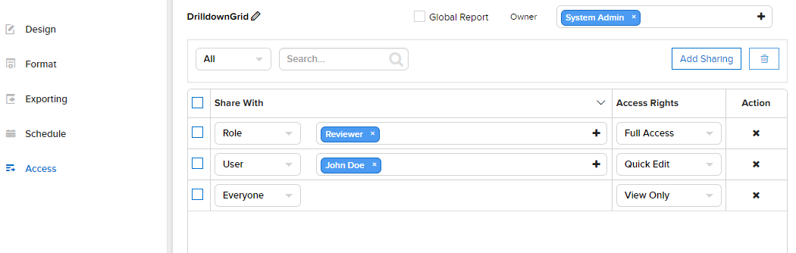

Report Designer/Access¶
The Report Designer/Access page allows user to
- view and change report owner
- view list of sharings
- add and remove sharings
View List of Sharings¶
Open an existing report if not already open.
Click Access in the left menu.
Report’s current sharings will be listed, showing the people being shared with and the access rights.
Fig. 223 Report Designer - Access
{kind=link}
To remove sharings:
- To remove a sharing, click the remove icon (x) at the end of that row.
- To remove multiple sharings at the same time, tick the check-box in front of each row, then click the Remove Selected icon (that looks like a waste basket).
User can also edit the sharings, then click Save at the top to save.
For details of a sharing, see Add a Sharing section.
Add a Sharing¶
- Click the Add Sharing button above the list to add a new row in the list:
- Select the type of people to share with: Everyone, Role or User.
- Select the specific Role or User (not applied for Everyone option).
- For Role, select a role from the drop-down list.
- For User, click the plus icon to open All User pop-up.
- Select either User Name, Email Address or Role to search for. Select All to search for all fields.
- Type a partial name into the search box and click the search icon (🔍).
- Only matching users will be displayed.
- Select one more more users then click OK to close the pop-up.
- Select an Access Right (See details in List of Access Rights table below).
- Click Save button at the top to save the list.
| Share With Value | Specific User | Specific Role | Everyone |
|---|---|---|---|
| Interaction | All roles of User | This Role | All roles of tenant/system |
| Interact with shared report |
Full Access | Quick Edit | Save As | Locked | View Only | No Access |
|---|---|---|---|---|---|---|
| View the report with filter interaction | ✔ | ✔ | ✔ | ✖ | ✔ | ✖ |
| View the report with NO filter interaction | ✖ | ✖ | ✖ | ✔ | ✖ | ✖ |
| Modify the report in Quick Edit mode | ✔ | ✔ | ✔ | ✖ | ✖ | ✖ |
| Modify the report in Report Designer | ✔ | ✖ | ✔ | ✖ | ✖ | ✖ |
| Save changes in the report | ✔ | ✖ | ✖ | ✖ | ✖ | ✖ |
| Save As changes in the report | ✔ | ✔ | ✔ | ✖ | ✖ | ✖ |
| Access Right | Full Access | Quick Edit | Save As | Locked | View Only | No Access |
|---|---|---|---|---|---|---|
| Visible Category | ✔ | ✔ | ✔ | ✔ | ✔ | ✖ |
| Categories allowed for saving reports | ✔ | ✖ | ✖ | ✖ | ✖ | ✖ |
| Access Right |
|---|
| Full Access |
| Save As |
| Quick Edit |
| Locked |
| View Only |
| No Access |
View and Change Report Owner¶
The Report Owner is displayed next to the report name.
To change Report Owner:
- Click the plus icon to open All Users pop-up.
- Select either User Name, Email Address or Role to search for. Select All to search for all fields.
- Type a partial name into the search box and click the search icon (🔍).
- Only matching users will be displayed.
- Select the user then click OK to close the pop-up.
- Click Save button at the top to save the report together with the owner.